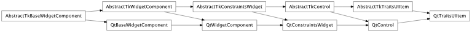
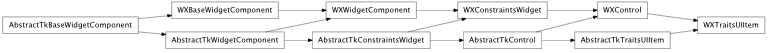

Bases: enaml.components.control.Control
A control which embeds a traits ui view.
The TraitsUIItem allows a traits ui window to be embedded into an Enaml application. The ui that is embedded will be the same as that which is created by calling model.edit_traits(...).
The model being displayed in the traits view.
An optional specialized view to use for the model.
The optional handler to use for the model and view.
Overridden parent class trait
alias of __NoInterface__

Bases: enaml.backends.qt.qt_control.QtControl, enaml.components.traitsui_item.AbstractTkTraitsUIItem
A Qt implementation of TraitsUIItem.
The traits ui item allows the embedding of a traits ui window in an Enaml application.
See Also
TraitsUIItem

Bases: enaml.backends.wx.wx_control.WXControl, enaml.components.traitsui_item.AbstractTkTraitsUIItem
A wxPython implementation of TraitsUIItem.
The traits ui item allows the embedding of a traits ui window in an Enaml application.
See Also
TraitsUIItem